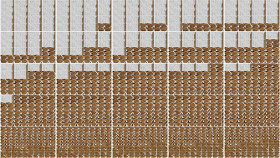

Zu Hanne Darboven / Abschliessend
Thomas Mohr – NL 2014
8 min – HD – ohne Dialoge
K+S+P: Thomas Mohr – M: Hanne Darboven
ABSCHLIEßEND ist der letzte von vier Teilen einer Serie, basierend auf dem Requiem Opus 22, Buch 58-61, die sich der Musik Hanne Darbovens (1941 – 2009) nähert. Grundlage des Films sind 1853 akribisch aufgenommenen Fotos aus Darbovens Ausstellung “The order of time and things. The home studio of Hanne Darboven”, organisiert vom Museo Nacional Centro de Arte Reina Sofía und den Deichtorhallen Hamburg. Die aufgenommenen Bilder werden in ein System aus sich immer weiter ausbreitenden Zyklen übernommen. Das Resultat: ein neuer Zeit-Raum.
dienstag 13 okt 22.30 uhr werkstattkino
Thomas Mohr lebt und arbeitet in Amsterdam. Seit den späten 80er Jahren erforscht er systematisch Wahrnehmungsprozesse und Erfahrungen in Filmen und Installationen, die sich mit dem Wandel von Informationen und der Evolution der Neuen Medien beschäftigen.
Filme (Auswahl) Realm 1 Part 1 2008 – Resonance 2010 – 544/544 (up/down) 2011 – Schinkel Zeit 2012 –Gedankenstrich(e)/Hanne Darboven 2013